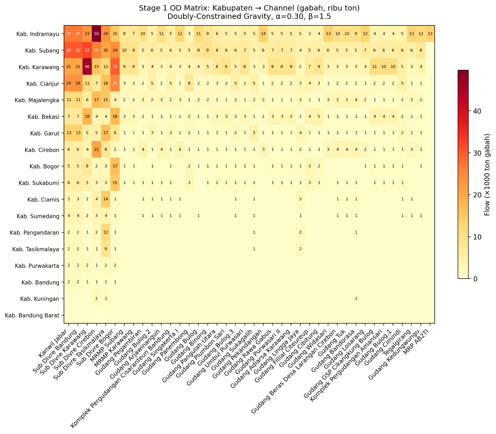
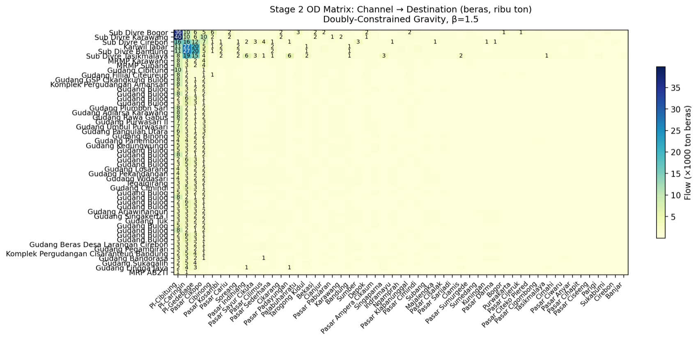
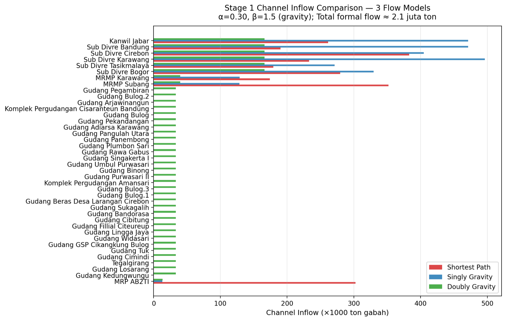
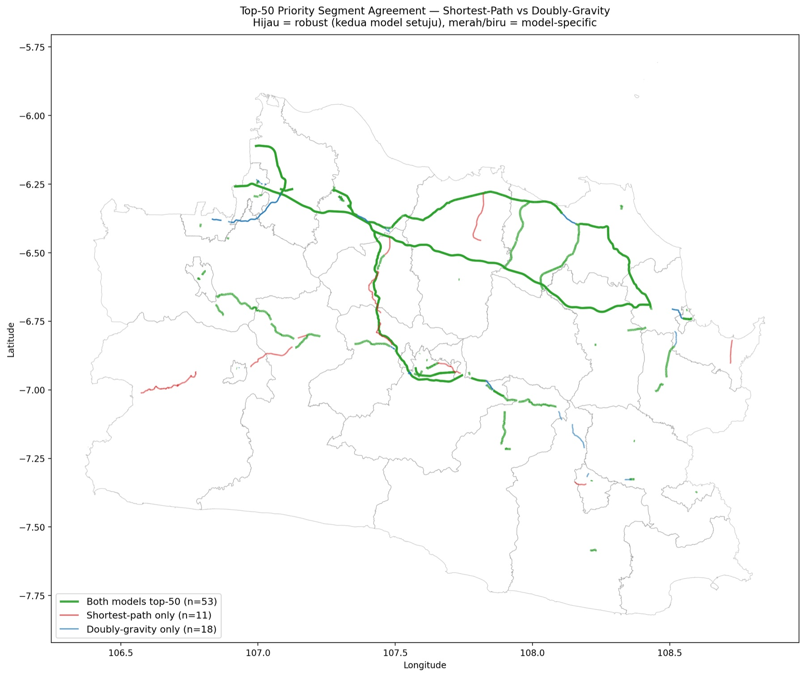
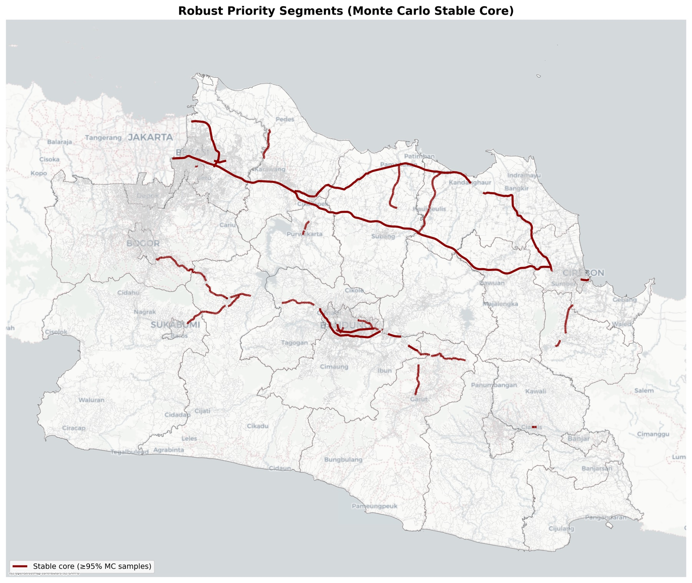

Rice supply begins as a scattered agricultural surface.
The first layer shows where production clusters appear before the logistics model connects them to formal channels and urban demand.
Mapping the most critical road segments for West Java’s food security through network-flow modeling of rice logistics over a road network of 2.1 million edges, from 254 rice production centers to 40 processing channels and on to 53 market destinations.
West Java is Indonesia’s 3rd-largest rice producer (8.63 million tons of dry unhulled rice / GKG, ~10% of national output), with over 50% of production concentrated in the North Coast (Pantura) corridor. The province’s rice-supply resilience depends on the road network linking production centers → processing facilities → markets.
Three objectives:
Each origin → cheapest channel. Transparent baseline; ignores capacity.
Volume spread by attractiveness × e−β·cost, β = 1.5. Origin totals conserved.
Both origins and channels balanced. Furness iteration, tol 1e-4. Physically credible flows.
Why a multi-stage flow. Rice changes state along the chain: farms ship unhulled grain (gabah) to processing channels, mills convert it to milled rice (beras) at channel-specific yields, and the rice moves on to markets. Modeling this as two linked stages over the West Java OSM network (2,133,733 edges, 890,273 nodes) keeps volumes physically consistent: Stage 2 totals equal Stage 1 inflows after each channel’s milling yield (0.62 for MRMP, 0.50 for AB2TI, 0.55 for Sub-Divre and warehouses). A single-stage shortcut would route tonnage that never exists. Stage 1 is also scaled by the Bulog absorption parameter α = 0.30, the share of production entering the formal channel system; the rest flows through informal private mills and local markets.
Locating production. BPS reports production by regency, but the network needs finer origins. Production is therefore disaggregated to 713 districts by areal weighting over ~1 million mapped rice-field polygons: each district receives production in proportion to its paddy area, and the totals are checked to reconcile with official BPS figures within 0.01%. The Location Quotient, a district’s production share divided by its area share, then classifies 224 districts as primary (LQ ≥ 2) or secondary (1 ≤ LQ < 2) production centers, with KP2B protected-farmland zones as a spatial cross-check.
Three flow models, on purpose. Flow assignment is where methodological choices bite hardest, so three models were run and compared rather than trusting one. Shortest-path sends each origin’s entire formal volume to its cheapest channel; it is the transparent baseline, but it ignores capacity (one mill received 352k tons against a 120 ton/day capacity). Singly-constrained gravity spreads each origin’s volume across channels in proportion to attractiveness × exp(−β·cost), with β = 1.5 from the agricultural-goods literature; origin totals are conserved, but busy channels can still overload. The doubly-constrained model (Wilson, 1971) conserves both ends: balancing factors for every origin and channel are solved by Furness iteration (up to 50 iterations, tolerance 1e-4) until each origin ships exactly its supply and each channel receives a capacity-proportional demand. That last property is what makes its flows physically credible.
Travel costs. Route costs combine network distance with road-class speeds, adjusted by sub-corridor speed factors. Twenty truck routes from the TomTom Routing API calibrate those factors against observed driving times: four of five Pantura sub-corridors came in within ±10% of the heuristic, and the Cipali toll factor was revised downward where it overestimated speed.
From flows to a ranking. Edge-level flows are aggregated to named road segments (grouping by name + highway class, with osmid for unnamed roads, which prevents artificial mega-segments). Each segment is then scored on five standardized dimensions:
z-scores put the five dimensions on a common scale before weighting. Flow is the modeled tonnage; criticality is the simulated impact of disrupting the segment; betweenness is topological importance, approximated by sampling (k = 500) because the 890k-node graph is too large for exact computation; condition and hazard act as risk modifiers. The weights reflect a structured expert review, and their influence is itself tested below.
Refinements and robustness. Seven refinements harden the model: the AB2TI channel restricted to Indramayu origins, α = 0.30 absorption, continuous rice-mill weighting per regency, channel-specific yields, Pantura speed factors, face-validity framing of the validation, and Monte Carlo weights. Robustness is then tested on four independent axes: empirical speed calibration (TomTom), α swept over {0.20, 0.30, 0.40}, the three flow models compared head-to-head, and 1,000 Dirichlet draws over the composite weights to see whether the ranking survives weight uncertainty.
| Data type | Source | Coverage |
|---|---|---|
| Rice production | BPS West Java 2024 | 10/27 verified, 17/27 estimated |
| Road network | OpenStreetMap (OSMnx, Overpass) | 2.13 million edges |
| Rice fields | BPIW Rice Field Map | ~1 million polygons |
| KP2B & boundaries | Data JABAR / Geoportal BIG | 27 regencies + 627 districts |
| Existing RMU | West Java Agriculture Agency | 30,941 units |
| Channels (Bulog) | TomTom POI + OSM | 5 Sub-Divre + 2 MRMP + 1 AB2TI + 31 warehouses |
| Destinations | TomTom POI + Data JABAR | 4 central markets + 22 public markets + 27 capitals |
| Hazards | Data JABAR | Landslide · earthquake · fault |
| Speed calibration | TomTom Routing API (truck) | 20 routes · 5 Pantura sub-corridors |
Transparently disclosed limitations: flood hazard not covered (excluded, weights renormalized), condition modifier defaulted to 1.0, and 17 regencies/cities estimated via areal weighting.
OD matrices were built for both stages (254 centers × 40 channels; 40 channels × 53 destinations), visualized as desire lines & heatmaps. Flow was accumulated per OSM edge (line width ∝ log flow), composite scoring integrated 5 dimensions, and robustness was tested across 4 dimensions including a 1,000-sample Dirichlet Monte Carlo.
This interactive layer rebuilds the case-study map from the committed GeoJSON outputs: district balances, production centers, supply-chain nodes, modeled OD desire lines, network flow, and the final priority-road shortlist.
Location-quotient centers are layered over district surplus and deficit conditions before flow is assigned.
Source: committed GeoJSON outputs in maps/data/pangan/; road-flow layer is sampled to the highest-flow segments for browser performance.
The first layer shows where production clusters appear before the logistics model connects them to formal channels and urban demand.
The node layer separates production geography from the distribution network: warehouses, Bulog facilities, public markets, and city centers.
OD links reveal the hub-and-spoke structure before trips are constrained by the physical road network.
Flow is accumulated along OSM road segments, so the picture moves from abstract OD desire to concrete corridor pressure.
Priority segments are not simply the busiest links; they are the links where flow, strategic context, and sensitivity tests point to the same intervention value.



| Robustness dimension | Result |
|---|---|
| TomTom calibration | 4/5 sub-corridors within ±10% tolerance |
| α sensitivity | ρ = 1.00; top-10 overlap 100% |
| 3 flow models | ρ ≥ 0.9997 |
| Monte Carlo weights | ρ = 0.9986; 40 stable-core segments |


Methodological contribution: the first application of a doubly-constrained gravity model with Furness balancing for Indonesia’s rice supply chain, empirically validated with TomTom, with an explicit OD matrix as a transport-planning reference. The pipeline (~3,500 lines of Python, 14 scripts) is available as a reproducible research artifact.
Conclusion: Pantura West Java is the single most critical artery for the province’s rice supply chain, holding the #1 composite priority score (156.72) across every model variant and parameter setting. The ranking is highly robust (Spearman ρ ≥ 0.9987 across all tests), and a stable core of 40 segments stays within the top-50 in ≥95% of Monte Carlo iterations, a statistically confident set of priority roads. Flow concentrates heavily on four central markets (55.8% of milled-rice volume), reflecting a wholesale-dominated supply structure.
Loading literature map...
Wilson, A. G. (1971). A family of spatial interaction models, and associated developments. Environment and Planning A, 3(1), 1–32.
BPS Jawa Barat (2024). Rice production statistics (provincial & regency level).
BPIW, Ministry of Public Works & Housing, Rice Field Map & administrative boundaries (via Geoportal BIG).
OpenStreetMap contributors, West Java road network (via OSMnx / Overpass API).
TomTom, Points of Interest & Routing API (truck profile, real-time traffic).
Data JABAR (Open Data Jawa Barat), landslide, earthquake & fault hazards; public & central markets.
West Java Agriculture Agency (Dinas Pertanian Jabar), existing rice-milling units (RMU).